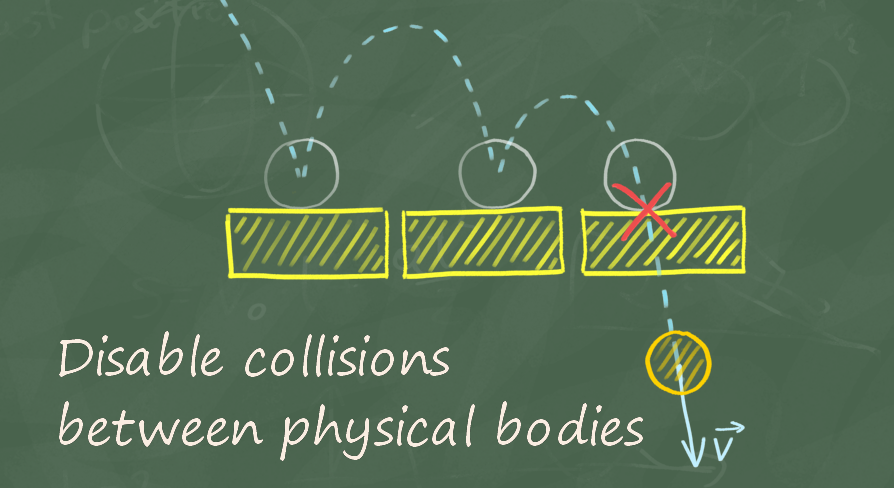
Thanks to this plugin you will be able to turn off collisions between the indicated pairs of physical objects.
Video: Collision Disabler
The Unreal Engine provides several methods to disable collisions between objects.
Collision Disabler uses the last method to provide a very simple and convenient way to disable collision between objects using physics simulation.
Features list:
In order to enable the plugin go to Edit -> Plugins, select Physics category and check Enabled for Collision Disabler
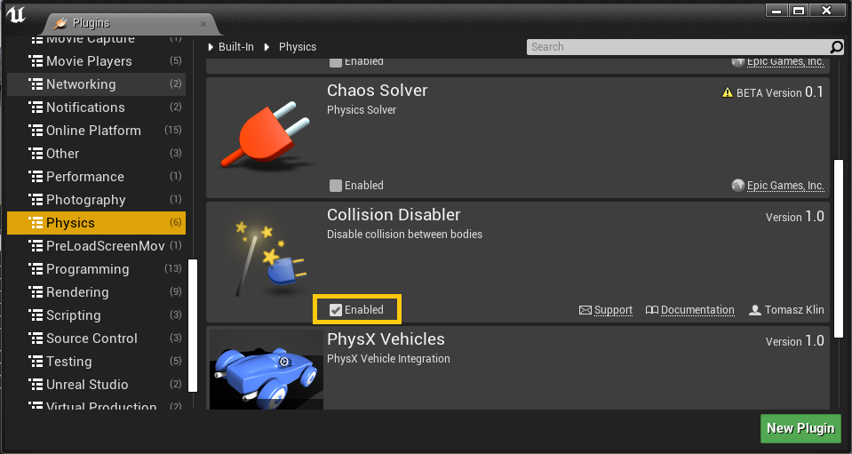
Disable collision between two primitive components with one PhysicalBody e.g. StaticMesh. Pins:
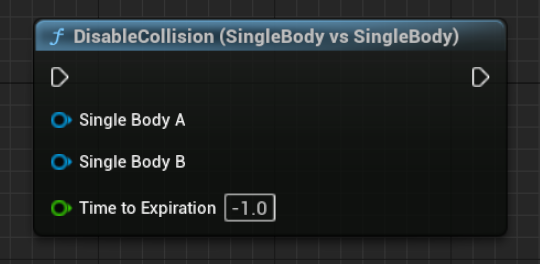
This node allows you to disable collisions between a SkeletalMeshComponent and a PrimitiveComponent. You have to specify which bones in the SkeletalMeshComponent should be considered when disabling collisions. Pins:
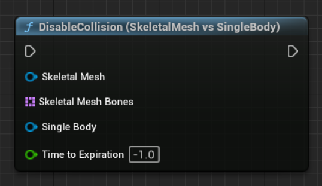
This node allows you to disable collisions between two SkeletalMeshComponents. You have to specify which bones in both components should be considered when disabling collisions.
Pins:
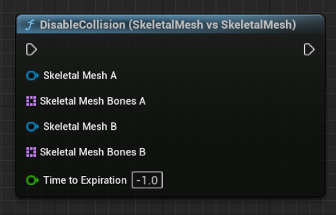
There are corresponding nodes for enabling collisions in the "Collision Disabler" plugin. These nodes allow you to re-enable collisions between the specified components or types of components, essentially reversing the action of the "Disable Collision" nodes. The parameters and functionality of these nodes are similar to the "Disable Collision" nodes, but they enable collisions instead of disabling them.
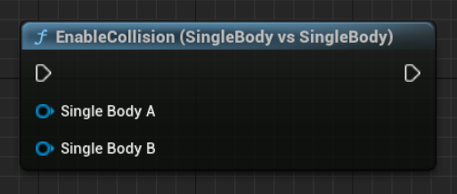
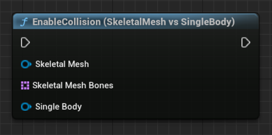
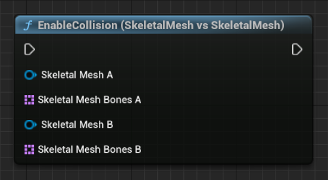
Check that a given pair of bodies has a disabled collision.
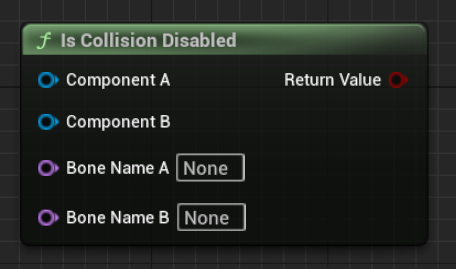
This node helps to easily list all bones that have any physics representation
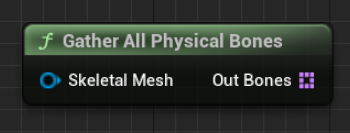
This node returns a list of physical bones from a given bone
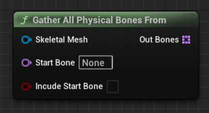
Using a plugin in C++ is quite straightforward. All functions described above are located in the UCollisionDisablerFunctionLibrary Functions:
| Return | Name | Description |
|---|---|---|
| void | DisableCollision_SingleBodyVsSingleBody( UPrimitiveComponent* SingleBodyA, UPrimitiveComponent* SingleBodyB, float TimeToExpiration = -1) | Disable collision between two primitive components with one PhysicalBody e.g. StaticMesh. |
| void | DisableCollision_SkeletalVsSingleBody( USkeletalMeshComponent* SkeletalMesh, const TArray<FName> SkeletalMeshBones, UPrimitiveComponent* SingleBody, float TimeToExpiration = -1) | Disable collisions between a SkeletalMeshComponent and a PrimitiveComponent. You have to specify which bones in the SkeletalMeshComponent should be considered when disabling collisions. |
| void | DisableCollision_SkeletalVsSkeletal( USkeletalMeshComponent* SkeletalMeshA, const TArray<FName> SkeletalMeshBonesA, USkeletalMeshComponent* SkeletalMeshB, const TArray<FName> SkeletalMeshBonesB, float TimeToExpiration = -1) | Disable collisions between two SkeletalMeshComponents. You have to specify which bones in both components should be considered when disabling collisions. |
| void | EnableCollision_SingleBodyVsSingleBody( UPrimitiveComponent* SingleBodyA, UPrimitiveComponent* SingleBodyB) | Re-enable collision between two primitive components with one PhysicalBody, such as StaticMesh. |
| void | EnableCollision_SkeletalVsSingleBody( USkeletalMeshComponent* SkeletalMesh, const TArray<FName> SkeletalMeshBones, UPrimitiveComponent* SingleBody) | Re-enable collisions between a SkeletalMeshComponent and a PrimitiveComponent. You have to specify which bones in the SkeletalMeshComponent should be considered when enabling collisions. |
| void | EnableCollision_SkeletalVsSkeletal( USkeletalMeshComponent* SkeletalMeshA, const TArray<FName> SkeletalMeshBonesA, USkeletalMeshComponent* SkeletalMeshB, const TArray<FName> SkeletalMeshBonesB) | Re-enable collisions between two SkeletalMeshComponents. Specify which bones in both components should be considered when enabling collisions. |
| bool | IsCollisionDisabled( UPrimitiveComponent* ComponentA, UPrimitiveComponent* ComponentB, FName BoneNameA = NAME_None, FName BoneNameB = NAME_None) | Check that a given pair of bodies has a disabled collision. |
| void | GatherAllPhysicalComponents( AActor* Actor, TArray<UPrimitiveComponent*>& OutComponents) | Return a list of all components in given actor that have physics representation |
| void | GatherAllPhysicalBones( USkeletalMeshComponent* SkeletalMesh, TArray<FName>& OutBones) | Return a list of all bones that have any physics representation |
| void | GatherAllPhysicalBonesFrom( USkeletalMeshComponent* SkeletalMesh, FName StartBone, bool bIncudeStartBone, TArray<FName>& OutBones) | Returns a list of physical bones from a given bone |
Collision Disabler is very efficient. The performance cost is Zero for objects that are not managed by CollisionDisabler. And a very small constant cost for every collision with objects that have a disabled collision. This means that only the number of actual colliding objects have an influence on performance.
The table below shows whether the Collision Disabler can disable collisions.
Static Geometry - Not movable geometry e.g. buildings, rocks
Kinematic Body - Movable objects without enabled physics e.g. characters, projectiles
Dynamic Body - Simulate by physics object (enabled Simulate Physics) e.g. ragdolls
| Body vs Body | Static Geometry | Kinematic Body | Dynamic Body |
|---|---|---|---|
| Static Geometry | N/A | No1 | Yes |
| Kinematic Body | No1 | No1 | Yes2 |
| Dynamic Body | Yes | Yes2 | Yes |
1 - Kinematic and Static bodies don’t generate collisions (Hit Events) because they are not simulated by the Physics Engine. For some object classes like characters or projectiles, you can use IgnoreActorWhenMoving or IgnoreComponentWhenMoving to prevent blocking objects.
2 - Physical collision will be disabled, but still, kinematic objects may be blocked. In this case, also use IgnoreActorWhenMoving or IgnoreComponentWhenMoving nodes along with DisableCollision.